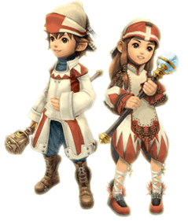

21 |
Jobs |
 |
Abenteurer können sich auf verschiedene Weisen in den sogenannten „Jobs“ spezialisieren. Aufstrebende Abenteurer werden zu Kriegern, wenn sie erstmalig offiziell beauftragt werden.
Mit dem Fortschritt des Spiels erfordern die Einsatzorte langsam mehr als bloßen körperlichen Einsatz. Ein guter Zeitpunkt, um die Abenteurer zu einem Jobwechsel zu bewegen. Der Wechsel in einen anderen Job erfordert das entsprechende Gebäude. Sobald dies erledigt ist, kann ein Jobwechsel-Geheiß erlassen werden, um Abenteurer zu versammeln, die für den neuen Job geeignet sind. Vier Jobs und die dazugehörigen Gebäude werden hier erläutert. |
|
 ●
●

● White Mage (Weißmagier)
Der Weißmagier ist als Heiler für jede erfolgreiche Abenteurertruppe unverzichtbar. Ein „White Mage Temple“ (Weißmagiertempel) ist nötig, damit ein Abenteurer zum Weißmagier ausgebildet werden kann.
| |
 ● Black Mage (Schwarzmagier)
● Black Mage (Schwarzmagier)Der Schwarzmagier ist ein Meister der elementaren Magie und versteht sich besonders darauf, sich seiner Feinde mittels Angriffszauber zu entledigen. Eine „Black Mage Academy“ (Schwarzmagierakademie) ist von Nöten, damit ein Abenteurer den Job eines Schwarzmagiers erlernen kann. |
 ● Thief (Dieb)
● Thief (Dieb)Ein Erforscher und Schatzjäger. Der Dieb kann lästige verschlossene Schatztruhen öffnen und ermöglicht seiner Truppe auch, unnötige Kämpfe geschickt zu vermeiden. Eine „Gaming Hall“ (Spielhalle) ist erforderlich, um einen Abenteurer zum Dieb auszubilden. |
Abenteurer, die sich um ein Jobwechselgeheiß versammeln, wenden sich an dich, um zu fragen, ob sie den ausgeschriebenen Job übernehmen sollen.
Es ist zu beachten, dass ein Abenteurer alle in einem anderen Beruf erlernten Fertigkeiten verliert, wenn er einen neuen ergreift. Diese Auswahl sollte daher sehr sorgfältig getroffen werden. |
 |
 |
 |